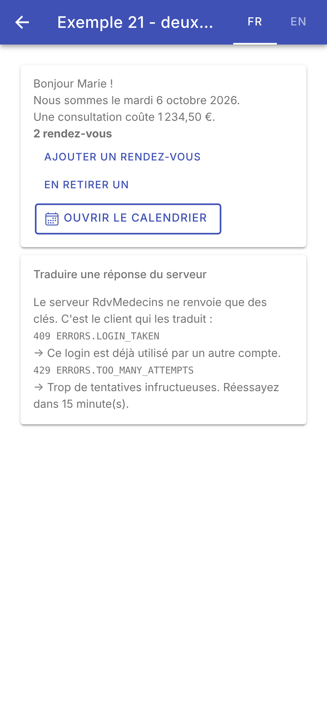
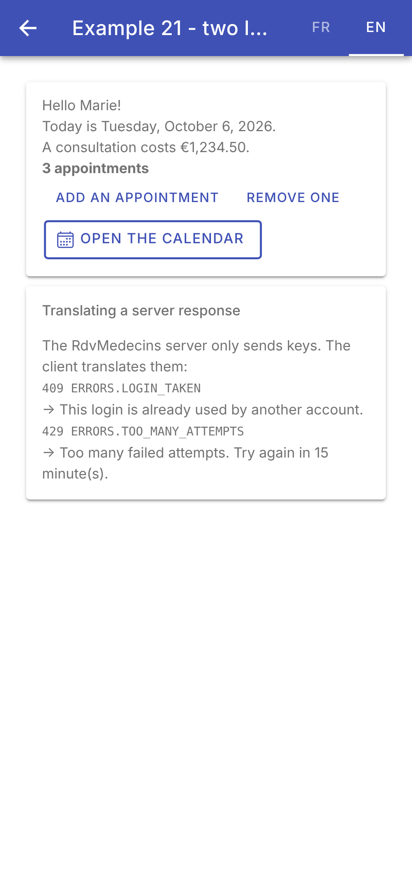
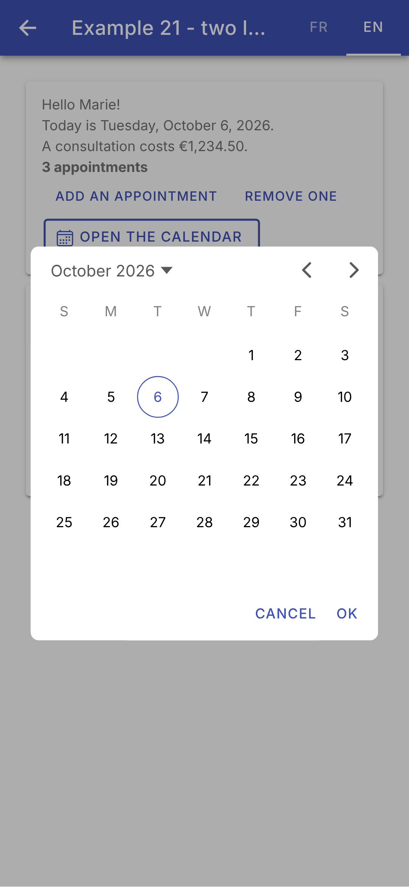

7. Internationalisation
7.1. Exemple 21 : une application en deux langues
Une application en deux langues a trois sortes de textes à traduire :
- les textes de l'application : ses libellés, ses messages. On les range dans des dictionnaires, un par langue ;
- les dates et les montants : l'objet [Intl] de [JavaScript] les met en forme dans la langue voulue (cf. exemple 09) ;
- les textes d'[Ionic] lui-même : les mois et les jours de son calendrier, ses boutons. Le calendrier ([<ion-datetime>]) reçoit la langue par son attribut [locale].
7.1.1. Les dictionnaires
| {
"APP": {
"TITRE": "Exemple 21 - deux langues",
"LANGUE": "Langue"
},
"ACCUEIL": {
"BONJOUR": "Bonjour {{nom}} !",
"AUJOURDHUI": "Nous sommes le {{date}}.",
"PRIX": "Une consultation coûte {{prix}}.",
"RENDEZ_VOUS_zero": "aucun rendez-vous",
"RENDEZ_VOUS_one": "un rendez-vous",
"RENDEZ_VOUS_other": "{{count}} rendez-vous",
"AJOUTER": "Ajouter un rendez-vous",
"RETIRER": "En retirer un",
"CALENDRIER": "Ouvrir le calendrier",
"CALENDRIER_OK": "OK",
"CALENDRIER_ANNULER": "Annuler"
},
"ERRORS": {
"LOGIN_TAKEN": "Ce login est déjà utilisé par un autre compte.",
"TOO_MANY_ATTEMPTS": "Trop de tentatives infructueuses. Réessayez dans {{minutes}} minute(s)."
},
"SERVEUR": {
"TITRE": "Traduire une réponse du serveur",
"EXPLICATION": "Le serveur RdvMedecins ne renvoie que des clés. C'est le client qui les traduit :"
}
}
|
Chaque texte a une clé (« ACCUEIL.BONJOUR »). Les paramètres s'écrivent [{{nom}}] ; un texte au pluriel a plusieurs clés, [_zero], [_one], [_other]. Ce sont les conventions de la bibliothèque [JavaScript] [i18next], utilisée par les clients [React] et [Vue.js] de [RdvMedecins] : l'étude de cas reprendra leurs dictionnaires, complétés de quelques clés. Le dictionnaire anglais a les mêmes clés :
| {
"APP": {
"TITRE": "Example 21 - two languages",
"LANGUE": "Language"
},
"ACCUEIL": {
"BONJOUR": "Hello {{nom}}!",
"AUJOURDHUI": "Today is {{date}}.",
"PRIX": "A consultation costs {{prix}}.",
"RENDEZ_VOUS_zero": "no appointment",
"RENDEZ_VOUS_one": "one appointment",
"RENDEZ_VOUS_other": "{{count}} appointments",
"AJOUTER": "Add an appointment",
"RETIRER": "Remove one",
"CALENDRIER": "Open the calendar",
"CALENDRIER_OK": "OK",
"CALENDRIER_ANNULER": "Cancel"
},
"ERRORS": {
"LOGIN_TAKEN": "This login is already used by another account.",
"TOO_MANY_ATTEMPTS": "Too many failed attempts. Try again in {{minutes}} minute(s)."
},
"SERVEUR": {
"TITRE": "Translating a server response",
"EXPLICATION": "The RdvMedecins server only sends keys. The client translates them:"
}
}
|
Les fichiers du dossier [public/] du projet sont livrés tels quels avec l'application (dans un navigateur : à l'adresse /i18n/ex21-fr.json ; sur [Android] : dans l'application elle-même). Par rapport aux dictionnaires de l'exemple [Flutter], deux clés ont été ajoutées : [CALENDRIER_OK] et [CALENDRIER_ANNULER], les boutons du calendrier (plus loin).
7.1.2. Les traductions
| // =========================================================================
// src/app/ex21-i18n/traductions.ts - des dictionnaires, une langue courante
// -------------------------------------------------------------------------
// Chaque langue a son DICTIONNAIRE, un fichier JSON livré avec
// l'application (public/i18n/ex21-fr.json, ex21-en.json), où chaque texte
// a une CLÉ ("ACCUEIL.BONJOUR") :
// - t('ACCUEIL.BONJOUR', { nom: 'Marie' }) : le texte de la langue
// COURANTE, dont les paramètres {{nom}} sont remplacés ;
// - t('ACCUEIL.RENDEZ_VOUS', { count: n }) : un texte au pluriel ; on
// choisit la clé RENDEZ_VOUS_zero, _one ou _other selon n et les règles
// de la langue (en français, 0 et 1 sont au singulier ; en anglais,
// seulement 1) ;
// - changerLangue('en') : charge l'autre dictionnaire. La langue et le
// dictionnaire sont des SIGNAUX : les gabarits qui appellent t() sont
// mis à jour, ils se retraduisent.
// Ce sont les conventions de la bibliothèque JavaScript i18next : les
// dictionnaires sont ceux des clients Vue.js, Angular et React de
// RdvMedecins... et le serveur, qui ne renvoie que des CLÉS
// ("ERRORS.LOGIN_TAKEN"), les utilise aussi.
// =========================================================================
import { signal } from '@angular/core';
import { Preferences as Stockage } from '@capacitor/preferences';
export const langues = ['fr', 'en'];
// un dictionnaire : des textes, ou d'autres dictionnaires (JSON imbriqué)
type Dictionnaire = { [cle: string]: string | Dictionnaire };
export class Traductions {
private readonly _langue = signal('fr');
private readonly _dictionnaire = signal<Dictionnaire>({});
readonly langue = this._langue.asReadonly();
// prefixe : le début du nom des dictionnaires (public/i18n/<prefixe>-<langue>.json)
constructor(private readonly prefixe: string) {}
// la langue de départ : celle mémorisée sur l'appareil, sinon celle du
// téléphone (si elle est connue), sinon le français
async demarrer(): Promise<void> {
const memorisee = (await Stockage.get({ key: `${this.prefixe}.langue` })).value;
const appareil = navigator.language.substring(0, 2); // "fr-FR" -> "fr"
await this.changerLangue(memorisee ?? (langues.includes(appareil) ? appareil : 'fr'));
}
async changerLangue(langue: string): Promise<void> {
// fetch : lit un fichier livré avec l'application (dossier public/)
const reponse = await fetch(`i18n/${this.prefixe}-${langue}.json`);
this._dictionnaire.set((await reponse.json()) as Dictionnaire);
this._langue.set(langue);
// la langue de la page (lecteurs d'écran, césure des mots...)
document.documentElement.lang = langue;
await Stockage.set({ key: `${this.prefixe}.langue`, value: langue });
}
// "ACCUEIL.BONJOUR" -> dictionnaire['ACCUEIL']['BONJOUR'] ; undefined si absente
private chercher(cle: string): string | undefined {
let noeud: string | Dictionnaire | undefined = this._dictionnaire();
for (const partie of cle.split('.')) {
noeud = typeof noeud === 'object' ? noeud[partie] : undefined;
}
return typeof noeud === 'string' ? noeud : undefined;
}
t(cle: string, params: Record<string, string | number> = {}): string {
let texte: string | undefined;
const count = params['count'];
if (typeof count === 'number') {
// Intl.PluralRules : la forme du pluriel ("one", "other"...), selon les
// règles de la langue ; la clé _zero, si elle existe, l'emporte pour 0
const forme = new Intl.PluralRules(this._langue()).select(count);
texte = (count === 0 ? this.chercher(`${cle}_zero`) : undefined) ?? this.chercher(`${cle}_${forme}`);
}
texte ??= this.chercher(cle);
// une clé inconnue s'affiche telle quelle : on voit tout de suite ce qui manque
if (texte === undefined) return cle;
// {{nom}} -> la valeur du paramètre nom
return texte.replace(/\{\{(\w+)\}\}/g, (tout, nom: string) => String(params[nom] ?? tout));
}
}
|
- ligne 25 : les langues de l'application ;
- ligne 28 : le type d'un dictionnaire : un objet dont chaque propriété est un texte, ou un autre dictionnaire (le type est récursif : il se cite lui-même) ;
- lignes 30-33 : les traductions gardent la langue courante et son dictionnaire dans des signaux. Une simple classe, et non un service [@Injectable] : chaque utilisateur la crée avec son propre préfixe (ligne 36 ; l'exemple 25 aura ses dictionnaires, [ex25-fr.json]...). Elle sera fournie à la page par une « fabrique » (plus loin) ;
- ligne 36 : [private readonly prefixe] dans les paramètres du constructeur déclare ET initialise un champ : un raccourci de [TypeScript] ;
- lignes 40-44 : la langue de départ : celle mémorisée sur l'appareil (le plugin [@capacitor/preferences] de l'exemple 20), sinon celle du téléphone ([navigator.language] : « fr-FR », dont on garde les deux premières lettres), si elle est connue, sinon le français ;
- lignes 46-54 : changer de langue : lire le dictionnaire avec [fetch], la fonction de [JavaScript] qui lit une adresse (ici, un fichier livré avec l'application) et rend une [Promise] de la réponse ; décoder son contenu JSON ([reponse.json()], une autre [Promise]) ; ranger le dictionnaire et la langue dans leurs signaux ; mettre à jour la langue de la page (attribut [lang] de la balise [<html>], utile aux lecteurs d'écran) ; mémoriser le choix sur l'appareil. On aurait pu utiliser le client HTTP d'[Angular] (exemple 22) : [fetch] évite d'en dépendre dans une simple classe ;
- lignes 57-63 : chercher une clé « ACCUEIL.BONJOUR » dans le dictionnaire : on descend, partie par partie ([split('.')]), dans les objets JSON imbriqués. [typeof noeud === 'object'] est un test de type, qui « rétrécit » le type de la variable dans la branche où il est vrai : [TypeScript] sait alors que [noeud] est un dictionnaire. La lecture du signal ([this._dictionnaire()], ligne 58) est essentielle : un gabarit qui appelle [t()] lit ainsi le signal, et sera mis à jour quand le dictionnaire changera ;
- lignes 65-79 : la traduction. Pour un pluriel (un paramètre [count] numérique), [Intl.PluralRules] donne la forme du pluriel selon les règles de la langue : [select(n)] rend [one] ou [other] (d'autres langues ont aussi [two], [few], [many]). En français, 0 et 1 sont au singulier ([one]) ; en anglais, seulement 1. La clé [_zero], si elle existe, l'emporte pour 0 (ligne 72), comme avec [i18next]. Une clé inconnue s'affiche telle quelle (ligne 76) : on voit tout de suite ce qui manque. Enfin (ligne 78), chaque [{{nom}}] est remplacé par la valeur du paramètre : une expression régulière, [/\{\{(\w+)\}\}/g], et une fonction qui reçoit chaque correspondance ([tout]) et le nom capturé entre parenthèses ([nom]).
Pourquoi pas l'outil officiel d'[Angular] ? [Angular] a son propre système d'internationalisation ([@angular/localize]) : on marque les textes des gabarits ([<p i18n>Bonjour</p>]), on extrait les traductions dans des fichiers, et la compilation produit UNE application par langue. C'est la meilleure solution pour un site web dont tous les textes sont connus d'avance. Mais elle ne change pas de langue « à chaud », et notre serveur renvoie des clés (« ERRORS.LOGIN_TAKEN ») qu'il faut traduire à l'exécution : un dictionnaire, qu'on interroge par la clé, s'y prête beaucoup mieux, et nous permet de partager les dictionnaires des autres clients. Des bibliothèques le font aussi pour [Angular] ([ngx-translate], [Transloco]) : notre service en est une version minimale.
7.1.3. La page traduite
| // =========================================================================
// src/app/ex21-i18n/ex21.page.ts - une application en deux langues
// -------------------------------------------------------------------------
// - les TEXTES de l'application : les dictionnaires (traductions.ts),
// fournis à la page par l'injection de dépendances (providers) ;
// - les dates et les montants : l'objet Intl de JavaScript, dans la
// langue courante (cf. exemple 09) ;
// - les textes d'Ionic LUI-MÊME (le calendrier) : l'attribut locale
// d'<ion-datetime>, et ses boutons, traduits par nos dictionnaires.
// Changer de langue retraduit tout l'écran, sans redémarrer.
// =========================================================================
import { Component, computed, effect, inject, signal } from '@angular/core';
import { Title } from '@angular/platform-browser';
import {
IonBackButton, IonButton, IonButtons, IonCard, IonCardContent, IonCardHeader, IonCardSubtitle, IonContent,
IonDatetime, IonHeader, IonIcon, IonLabel, IonModal, IonSegment, IonSegmentButton, IonTitle, IonToolbar,
SegmentValue,
} from '@ionic/angular';
import { addIcons } from 'ionicons';
import { calendarOutline } from 'ionicons/icons';
import { langues, Traductions } from './traductions';
// ce que renverrait le serveur RdvMedecins (cf. chapitre sur la boîte noire)
const reponsesServeur: { statusCode: number; cle: string; params: Record<string, string> }[] = [
{ statusCode: 409, cle: 'ERRORS.LOGIN_TAKEN', params: {} },
{ statusCode: 429, cle: 'ERRORS.TOO_MANY_ATTEMPTS', params: { minutes: '15' } },
];
@Component({
selector: 'app-ex21',
imports: [
IonHeader, IonToolbar, IonButtons, IonBackButton, IonTitle, IonSegment, IonSegmentButton, IonLabel, IonContent,
IonCard, IonCardHeader, IonCardSubtitle, IonCardContent, IonButton, IonIcon, IonModal, IonDatetime,
],
templateUrl: './ex21.page.html',
// un fournisseur PROPRE à la page : les traductions des dictionnaires ex21-*.json
providers: [{ provide: Traductions, useFactory: () => new Traductions('ex21') }],
styles: `
ion-segment { width: 110px; margin-inline-end: 8px; }
ion-segment-button { min-width: 50px; }
ion-modal.calendrier { --width: fit-content; --height: fit-content; --border-radius: 8px; }
.code { font-family: monospace; font-size: 12px; }
`,
})
export class Ex21Page {
readonly tr = inject(Traductions);
readonly langues = langues;
readonly reponsesServeur = reponsesServeur;
readonly nombre = signal(2);
private readonly aujourdhui = new Date();
// des mises en forme dans la langue COURANTE : recalculées quand elle change
readonly date = computed(() =>
new Intl.DateTimeFormat(this.tr.langue(), { dateStyle: 'full' }).format(this.aujourdhui),
);
readonly prix = computed(() =>
new Intl.NumberFormat(this.tr.langue(), { style: 'currency', currency: 'EUR' }).format(1234.5),
);
// la langue d'ion-datetime : une "locale" complète (langue-pays)
readonly locale = computed(() => (this.tr.langue() === 'fr' ? 'fr-FR' : 'en-US'));
constructor() {
addIcons({ calendarOutline });
this.tr.demarrer();
// le titre du document (onglet du navigateur), traduit : un effet,
// rejoué quand la langue change
const titre = inject(Title);
effect(() => titre.setTitle(this.tr.t('APP.TITRE')));
}
// le segment de la barre du haut : sa valeur (de type SegmentValue : une
// chaîne ou un nombre) est la langue choisie
choisirLangue(valeur: SegmentValue | undefined): void {
this.tr.changerLangue(String(valeur));
}
}
|
| <!-- ======================================================================
ex21.page.html - une page en deux langues
====================================================================== -->
<ion-header>
<ion-toolbar color="primary">
<ion-buttons slot="start">
<ion-back-button defaultHref="/" />
</ion-buttons>
<ion-title>{{ tr.t('APP.TITRE') }}</ion-title>
<!-- les langues : un "segment", des boutons dont un seul est choisi -->
<ion-segment slot="end" [value]="tr.langue()" (ionChange)="choisirLangue($event.detail.value)">
@for (l of langues; track l) {
<ion-segment-button [value]="l"><ion-label>{{ l.toUpperCase() }}</ion-label></ion-segment-button>
}
</ion-segment>
</ion-toolbar>
</ion-header>
<ion-content class="ion-padding">
<ion-card>
<ion-card-content>
<div>{{ tr.t('ACCUEIL.BONJOUR', { nom: 'Marie' }) }}</div>
<div>{{ tr.t('ACCUEIL.AUJOURDHUI', { date: date() }) }}</div>
<div>{{ tr.t('ACCUEIL.PRIX', { prix: prix() }) }}</div>
<!-- count : choisit la forme du pluriel, et remplace {{count}} -->
<p><strong>{{ tr.t('ACCUEIL.RENDEZ_VOUS', { count: nombre() }) }}</strong></p>
<ion-button fill="clear" size="small" (click)="nombre.set(nombre() + 1)">
{{ tr.t('ACCUEIL.AJOUTER') }}</ion-button>
<ion-button fill="clear" size="small" [disabled]="nombre() === 0" (click)="nombre.set(nombre() - 1)">
{{ tr.t('ACCUEIL.RETIRER') }}</ion-button>
<br />
<!-- le bouton id="calendrier" ouvre la fenêtre modale trigger="calendrier" -->
<ion-button id="calendrier" fill="outline">
<ion-icon slot="start" name="calendar-outline" />
{{ tr.t('ACCUEIL.CALENDRIER') }}
</ion-button>
<ion-modal class="calendrier" trigger="calendrier">
<!-- ng-template : le contenu n'est créé qu'à l'ouverture de la fenêtre -->
<ng-template>
<!-- locale : les mois et les jours dans la langue courante (Intl) ;
firstDayOfWeek : le lundi (1) en français, le dimanche (0) en anglais -->
<ion-datetime presentation="date" min="2026-01-01" max="2027-12-31"
[locale]="locale()" [firstDayOfWeek]="tr.langue() === 'fr' ? 1 : 0" [showDefaultButtons]="true"
[doneText]="tr.t('ACCUEIL.CALENDRIER_OK')" [cancelText]="tr.t('ACCUEIL.CALENDRIER_ANNULER')" />
</ng-template>
</ion-modal>
</ion-card-content>
</ion-card>
<ion-card>
<ion-card-header>
<ion-card-subtitle>{{ tr.t('SERVEUR.TITRE') }}</ion-card-subtitle>
</ion-card-header>
<ion-card-content>
<p>{{ tr.t('SERVEUR.EXPLICATION') }}</p>
<!-- la clé du serveur EST une clé du dictionnaire ; params fournit ses paramètres -->
@for (r of reponsesServeur; track r.cle) {
<p class="code ion-margin-top">{{ r.statusCode }} {{ r.cle }}</p>
<p>→ {{ tr.t(r.cle, r.params) }}</p>
}
</ion-card-content>
</ion-card>
</ion-content>
|
- lignes 25-28 (.ts) : ce que renverrait le serveur [RdvMedecins] : un code HTTP, une clé, et ses paramètres ;
- ligne 38 (.ts) : un fournisseur PROPRE à la page : [providers] dans le décorateur [@Component] crée un exemplaire des traductions pour cette page (et ses composants), détruit avec elle. [useFactory] donne la fonction qui le fabrique, avec son préfixe ;
- lignes 40-42 (.ts) : la taille du choix des langues, et celle de la fenêtre du calendrier (une boîte de dialogue ajustée à son contenu, plutôt qu'une page entière) ;
- ligne 47 (.ts) : les traductions, obtenues comme un service ;
- lignes 54-59 (.ts) : la date et le prix, mis en forme dans la langue courante par [Intl.DateTimeFormat] ([dateStyle: 'full'] : « mardi 6 octobre 2026 », « Tuesday, October 6, 2026 ») et [Intl.NumberFormat] ([style: 'currency'] : « 1 234,50 € », « €1,234.50 »). Ce sont des signaux calculés : ils lisent la langue, et sont recalculés quand elle change. (Les pipes [date] et [currency] d'[Angular] acceptent aussi une langue en paramètre, mais il faut alors enregistrer les règles de chaque langue, comme [main.ts] le fait pour le français.)
- ligne 61 (.ts) : la langue du calendrier, sous la forme langue-pays qu'attend [<ion-datetime>] ;
- ligne 65 (.ts) : la langue de départ ;
- lignes 68-69 (.ts) : le titre du document (l'onglet du navigateur), traduit : le service [Title] d'[Angular], appelé par un effet, qui est rejoué quand la langue change ;
- lignes 74-76 (.ts) : le choix d'une langue ;
- ligne 10 (html) : le titre de la page, traduit ;
- lignes 12-16 (html) : le choix de la langue, dans la barre du haut : un [<ion-segment>], des boutons dont un seul est choisi ([value]), le pendant du [SegmentedButton] de [Flutter] ;
- lignes 23-25 (html) : des textes à paramètres. La date et le prix, déjà mis en forme, sont passés en paramètres ;
- ligne 27 (html) : [count] choisit la forme du pluriel, et remplace [{{count}}] ;
- lignes 34-47 (html) : le calendrier, dans une fenêtre modale ([<ion-modal>]) qu'ouvre le bouton dont l'[id] est donné par son attribut [trigger]. Son contenu, dans un [<ng-template>], n'est créé qu'à l'ouverture de la fenêtre. [<ion-datetime>] met en forme les mois et les jours avec [Intl], dans la langue de son attribut [[locale]] ; [[firstDayOfWeek]] : la semaine commence le lundi en français, le dimanche en anglais. Ses boutons (« Done », « Cancel » par défaut) ne sont pas traduits par [locale] : [[doneText]] et [[cancelText]] reçoivent les textes de nos dictionnaires. C'était le paquet [flutter_localizations] avec [Flutter] ;
- lignes 58-61 (html) : ce que renverrait le serveur [RdvMedecins]. La clé du serveur EST une clé du dictionnaire ; ses paramètres sont ceux du texte.
7.1.4. L'exécution
En français (à gauche) ; en anglais, après un ajout (au milieu) ; le calendrier, en anglais (à droite) :
 |  |  |
Changer de langue retraduit tout l'écran, sans redémarrer ni rien demander au serveur : la langue et le dictionnaire sont des signaux, et tout ce qui les lit (les textes du gabarit, la date, le prix, le titre) suit. La langue choisie est mémorisée sur l'appareil : relancez l'application (dans le navigateur, rechargez la page), elle s'ouvre dans la dernière langue choisie.